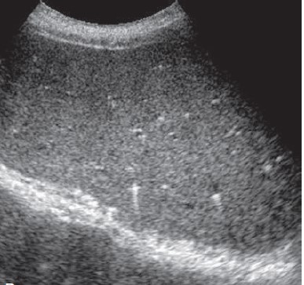

Biliary harmatoma (von Meyenburg Complexes)
These are small, focal developmental lesions of the liver composed of groups of dilated intrahepatic bile ducts set within a dense collagenous stroma. VMCs are usually isolated, insignificant observations and may occur with other congenital disorders, such as congenital hepatic fibrosis and polycystic kidney or liver disease
Clinical presentation
- Due to their small sizes, Biliary hamartomas are asymptomatic and usually found incidentally. However, in rare cases, they can potentially cause abdominal pain, jaundice, fever, or portal hypertension if they become large enough to obstruct bile flow or significantly impact liver function
Ultrasound features
- These can appear as single, multiple, or, most often, innumerable welldefined solid nodules usually less than 1 cm in diameter. Nodules are usually uniformly hypoechoic and less frequently hyperechoic on sonography
- Bright echogenic foci in the liver with distal comet tail artifact without obvious mass effect are key sonographic findings. that these echogenic foci could be related to the presence of tiny cysts beyond the resolution of the ultrasound equipment.
Because of their multiplicity they can be confused with metastatic cancer

Figure: 1